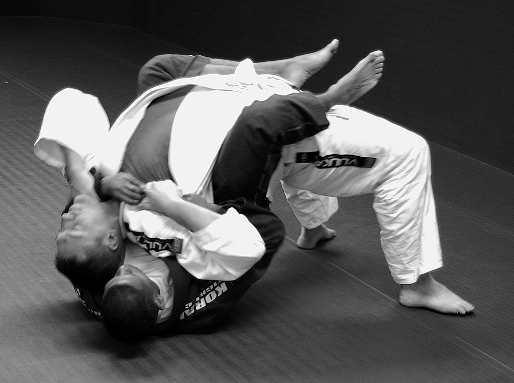

Co dělat
- Držet seatbelt pevně a hrudník neustále na zádech soupeře.
- Stabilizovat hooky nebo body triangle podle situace.
- Útočit na krk po systematickém grip fightingu.
BJJ POSITION
Jedna z nejsilnějších dominantních pozic. Klíč je kontrola, ne uspěchaný útok.

V Back Control drž seatbelt, udržuj hrudník na zádech soupeře a kontroluj boky přes hooky.